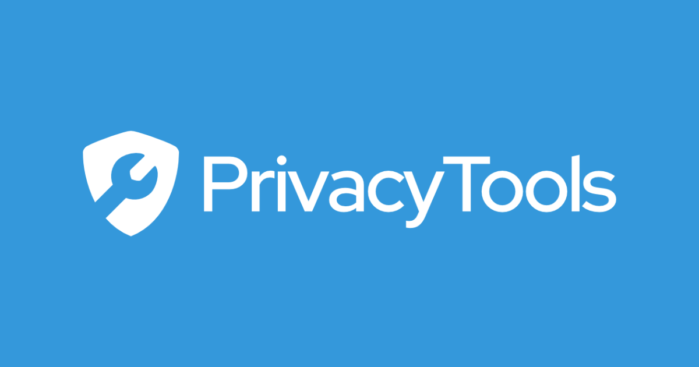

Advanced Security
The Basic Tips section is great for establishing a foundation for protecting your online privacy, but there is a lot more that can be done. The concepts in the articles below will require some more drastic changes, but if you can manage to integrate them into your daily life, you will be well on your way to "becoming anonymous."
1. Browse with Tor
2. Disk Encryption
3. Set a BIOS Password
4. Switch to Linux

PrivacyTools is a non-profit organization that provides services, tools, and knowledge to protect your privacy against global mass surveillance